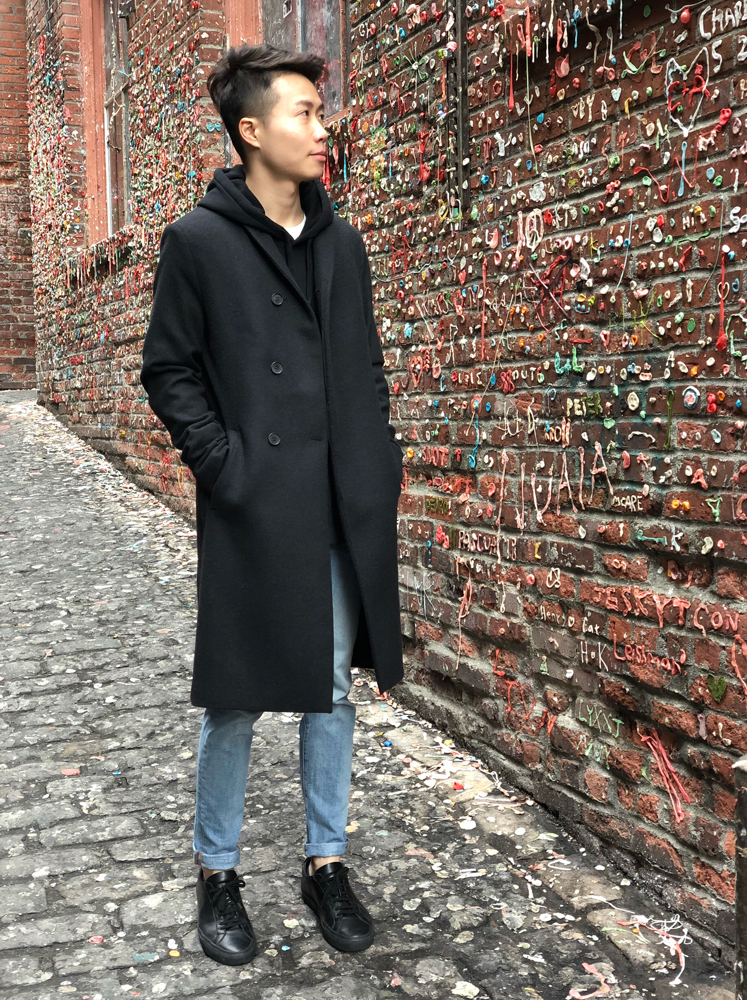

Most people may not recommend visiting Seattle in the winter, because it is rainy, cloudy, and cold. However, if you want to save money, winter is actually not a bad time to visit. The prices of hotels and/or Airbnb are much cheaper than those in the summer. Also, the weather is actually not as bad as the northeast. It rains sometimes, but you shouold be fine with a hoodie. Top three recommendations:
- Pike Place Market - The locals come here for grocery shopping, but it is also filled with tourists. Here, you can find the very first Starbucks and the gum wall.
- Capitol Hill - Probably the most trendy and hip neighborhood in Seattle. Tons of bars, restaurants, cafes, and vintages shops. It's worth it, so spend an afternoon to explore.
- Coffee & Happy Hour - With more than just Starbucks, Seattle offers a great selection of coffee. Try some independent coffee roasters - you may find them suprisingly good. Happy hour is great to try pacific seafood and local wine. Check out Taylor Shellfish, you'll find something you love.
